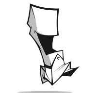

meecro nutz
how small can this be and still allow options?
[60,"var(--red-col)",{ "radius" : 1.20, "hole" : 0.4, "id" : "red-pill", "class" : "opts-path" }], [30,"var(--green-col)"], [10,"var(--yellow-col1)"]
[31,"var(--red-col)"], [60,"var(--green-col)"], [3,"var(--yellow-col1)"], [3,"var(--yellow-col2)"], [3,"var(--yellow-col3)"]
